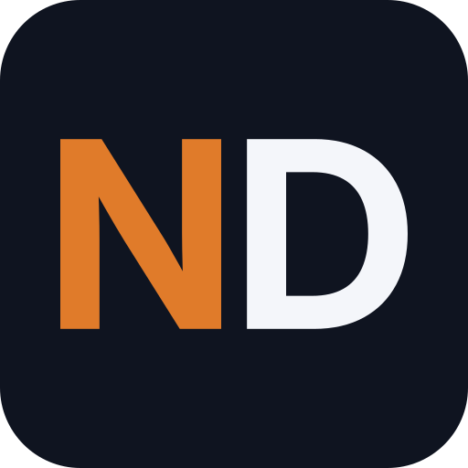
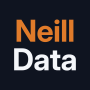
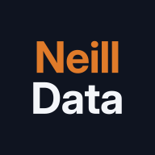

Assets showroom
A live library of the reusable components shared across the Neill Data Suite. Extracted from the apps, dropped in with a single <script> tag.
NEW · THE FIELD COLLECTION
Asset Studio
Mark up site photos, build a trade-symbol legend, and explore the new app favicon and interface icon family.
One logo, everywhere
Upload once and it syncs to a Logos folder in Drive. Every app that shows a logo — payslips, invoices — picks up the newest one automatically.
Components drop-in feature components (assets/*.js, shared/nd-ui)
confetti.js NDConfetti
Full-screen confetti burst for wins — quote accepted, milestone hit.
floaties.js NDFloaties
Little characters drift up and fade — a light celebratory touch.
pixel-cat.js NDCat
A pixel mascot whose eyes follow your cursor. Move your mouse around.
dodge-button.js NDDodge
A cheeky button that shrinks, taunts, then dodges the cursor.
confirm-pop.js NDConfirmPop
Self-drawing tick + ring pop for "done!" moments — uploads, clock-on, saves.
odometer.js NDOdometer
Numbers roll up instead of snapping — quote totals, week hours, stats.
skeleton.js NDSkeleton
Shimmer placeholders while lists/grids load, so content fades in.
energize.js NDEnergize
On-brand "powering up" pulse when a device/node goes live.
status-tint.js NDStatusTint
Tint a whole card by a value vs a target — red under, gold over, green bang on (the Timesheet day cards + SWB overload use it).
Sync tube shared/nd-ui
The water-fill sync indicator. Fills red→green as changes flush; taps to sync. Mounted top-right of this page — cycle its state:
NDUI.syncTube(window.NDQueue)
Sync fill assets
The second sync animation: the whole element fills with water — red at the base, green when synced. For buttons, chips, or text bubbles.
NDSyncFill.bind(el, window.NDQueue)
Camera capture assets
In-app camera: live preview, flip front/back, shutter that downscales and (optionally) stamps the watermark, returning a JPEG. Prompts for camera permission.
NDCamera.open({ watermarkLines, onCapture })
Countdown confirm assets
"Assume yes, but give a moment to change your mind." A prompt whose bar drains over N seconds, then auto-confirms.
NDCountdownConfirm.open({ title, message,
seconds: 4, secondaryLabel: "Change",
onConfirm, onSecondary })
Watermark assets
Paints an info strip on a photo: address, room/apartment/location, date-time, and uploader initials. Every field toggles. Edit below — it redraws live.
NDWatermark.draw(ctx, w, h, { lines: NDWatermark.buildLines(data, toggles) })
Here assets
One-tap geolocation → address. Fills a field from your GPS via reverse-geocode. (Needs the host app's Google Maps key — here it shows the graceful error path.)
NDHere.attachButton(btn, input, { region: "au" })
No-photo ping planner
A planner node with no photo "pings" red, overriding its status colour, so gaps are obvious at a glance.
.node-marker.no-photo { --status: var(--red) !important; }
Favicons & icons same collection as the Studio's “Favicons & icons” tab
Neill Data suite logo brand
The ND monogram and the stacked “Neill / Data” tile by Cinna, approved by Brandon. Brand/logo asset only. The Hub's own icon is the teal Suite hub icon (right), not this mark.



assets/brand/nd-logo/ (nd-monogram.svg, nd-tile-{180,192,512}.png,
nd-maskable-{192,512}.png). See README.md for provenance
Home-screen icons per app
The opaque PNG apple-touch-icon (180) and manifest icons (192/512) for every app. They are the suite icon art flattened onto the solid #101922 tile (iOS paints transparency black). Timesheet keeps its own orange clock.
npm run icons:render # scripts/render-app-icons.cjs
# → <app>/icons/icon-{180,192,512}.png (RGB, no alpha)
Planner UI icons planner
Planner's in-house 24 px stroke icon set (38 icons: toolbar, plan, portal, switchboard/sub-board). These glyphs differ from the suite's 24 interface icons. Rendered live from planner/app.js:
icon("camera") // planner/app.js iconPaths
// <svg viewBox="0 0 24 24" fill="none" stroke="currentColor">
ICO generator output ico
The multi-size Windows .ico look: two lines (name, then version at 80% of the text colour) in DejaVu Sans on Neill navy #0B1F3A, default sizes 16/32/48/256, plus a transparent option with a contrasting outline. Drawn here with the ICO app's own renderer:
NDIco.drawFrame(canvas, NDIco.makeSpec({ name, version }), 256)
// ico/ico-canvas.js · API GET /ico (ico/server.py) · CLI ico/cli.py
Styles & tokens new category: colour, type and layout tokens and plan/report styles
Suite design tokens shared/nd-core
The --nd-* custom properties every app shares: surfaces, text, amber/green/red accents, type stacks, spacing, radius and tap size. Read live from shared/nd-core.css:
background: var(--nd-surface); color: var(--nd-text);
border-radius: var(--nd-radius); min-height: var(--nd-tap);
Planner palette planner
Planner's theme colours, node status colours, default category tabs (Electrical / Data / AC) and folder colours. Read live from planner/styles.css and planner/app.js:
:root { --blue --cyan --teal --amber --green --red --violet … } // styles.css
statusMeta · DEFAULT_CATEGORY_TABS · DEFAULT_FOLDER_COLORS // app.js
Plan node markers planner
The pulsing status marker (Not started / In progress / Complete / Issue), plus the portal, switchboard and sub-board markers. The no-photo variant is the existing “No-photo ping” card above.
.node-marker { --status } .is-portal .is-switchboard .is-subboard
// planner/styles.css (demo mirrors the canonical rules)
Room overlays & title pin planner
Room polygons (sky fill and stroke, amber when selected, dashed green while drawing; opacity via --room-fill/--room-border) and the red map-pin room title label.
.room-poly polygon · .room-draw-poly · .title-pin-label · .title-pin-head
// planner/styles.css (demo mirrors the canonical rules)
Report cover & print styles planner
Cinna's 0.20.1 cover: big Neill Data logo, Neill Planner (40/700), job name (26/500, balanced), address and Sydney-time “Generated” stamp small at the foot. The print pages follow, then the Lean Drive PDF (html2canvas-pro + jsPDF; caps of 3 photos per node, 48 images, 40 pages, 18 MB).
.print-cover { --cover-logo-w:440px; --cover-logo-gap:8px }
REPORT_COVER_LOGO_SRC = "../logo.png" // planner/app.js · logo: /logo.png
GitHub reference assets open-source libraries, assets and tooling the suite uses (permissive licences only)
Source of truth: shared/vendor/README.md and the vendored LICENSE files, ico/requirements.txt, ico/LICENSE.Pillow.txt, ico/fonts/LICENSE.txt and planner/vendor/openseadragon/LICENSE.txt. Upstream repos checked on 2026-10-06.
| Name | Repo | Licence | What we use it for · where |
|---|---|---|---|
| pdf.js 6.3.289 (legacy build) | mozilla/pdf.js | Apache-2.0 | Renders PDF floor plans · shared/vendor/pdfjs/ via shared/nd-pdf.js (Planner, Fit-off, Checklist). Bundled wasm decoders: OpenJPEG BSD-2-Clause, PDFium JBIG2 BSD-3-Clause, qcms MIT, pdf.js glue Apache-2.0/BSD-2-Clause. iccs/ profile is CC0-1.0 (public-domain dedication) |
| OpenSeadragon | openseadragon/openseadragon | BSD-3-Clause | Deep-zoom plan view for raster PDFs · planner/vendor/openseadragon/ |
| html2canvas-pro 2.5.0 | yorickshan/html2canvas-pro | MIT | Report pages to canvas for the Lean Drive PDF · shared/vendor/html2canvas-pro/ (Planner) |
| jsPDF 2.5.1 | parallax/jsPDF | MIT | PDF output · shared/vendor/jspdf/ (Planner reports and room exports, Quote) |
| SheetJS Community Edition 0.20.3 | SheetJS/sheetjs | Apache-2.0 | Spreadsheet import/export · shared/vendor/sheetjs/ (Checklist). The GitHub repo is no longer updated; active source is git.sheetjs.com and builds come from cdn.sheetjs.com |
| Papa Parse 5.7.0 | mholt/PapaParse | MIT | CSV parsing · shared/vendor/papaparse/ via shared/nd-csv.js (Planner, Quote, Timesheet, Checklist) |
| pica 10.0.3 | nodeca/pica | MIT | High-quality photo downscale · shared/vendor/pica/ via shared/nd-resize.js (Planner, Quote, camera-capture.js) |
| exifr 7.1.3 | MikeKovarik/exifr | MIT | Photo EXIF GPS and capture time · shared/vendor/exifr.umd.js (Upload, Planner photos, exif-geo-detect.js) |
| Pillow 12.3.0 | python-pillow/Pillow | MIT-CMU (HPND family; permissive) | Draws and packs the .ico frames · ico/generate.py (ICO generator server and CLI). Licence text: ico/LICENSE.Pillow.txt |
| FastAPI 0.142.2 | fastapi/fastapi | MIT | ICO generator HTTP API (GET /ico, POST /ico, /health) · ico/server.py. Pulls in Starlette (Kludex/starlette, BSD-3-Clause) and Pydantic (pydantic/pydantic, MIT) |
| Uvicorn 0.54.0 | Kludex/uvicorn | BSD-3-Clause | ASGI server that runs the ICO API · ico/server.py (repo moved from encode/uvicorn) |
| python-multipart 0.0.32 | Kludex/python-multipart | Apache-2.0 | Multipart file uploads for POST /ico · ico/server.py |
| DejaVu Sans / Sans Bold 2.37 | dejavu-fonts/dejavu-fonts | Bitstream Vera Fonts licence (permissive) | DejaVu's own changes are public domain. Text glyphs in .ico output, server and in-page · ico/fonts/ (licence: ico/fonts/LICENSE.txt) |
| sharp build step only | lovell/sharp | Apache-2.0 | SVG to PNG for suite-icon exports · assets/suite-icons/build-assets.cjs (ND_SHARP_PATH). Not committed or shipped. Its prebuilt libvips binary is LGPL, so libvips is not listed here |
| actions/checkout v4 | actions/checkout | MIT | Checks out the repo in the Hub apps workflow · .github/workflows/hub-apps.yml |
| Hub tile builder + “Hub apps” Action in-house | toxieon/toxieon.github.io | In-house (Neill Data) | Auto-discovers app folders into hub/apps.json (npm run hub:apps) · hub/build-apps.cjs, hub/discover.json, .github/workflows/hub-apps.yml (regenerates on push to main) |
| Icon and symbol build scripts in-house | toxieon/toxieon.github.io | In-house (Neill Data) | scripts/render-app-icons.cjs (opaque home-screen PNGs, Node built-ins only; npm run icons:render/icons:check), assets/suite-icons/build-assets.cjs, assets/trade-symbols/build-assets.cjs |
| Suite icons 1.2.0 + trade symbols in-house | toxieon/toxieon.github.io | In-house original art | No third-party icon set is used anywhere in the suite. App/UI icons, trade symbols, Planner UI icons and the ND logo are all original |
Attribution-only notes: the Pillow wheels used by the ICO server bundle FreeType, which is dual-licensed FTL/GPLv2. We rely on the FTL, a permissive licence with a credit requirement, and the credit is carried in ico/LICENSE.Pillow.txt. The DejaVu fonts must keep the Bitstream copyright notice, which is in ico/fonts/LICENSE.txt.
Not listed: Google sign-in, Drive/Sheets and Maps scripts are hosted Google services under Google's terms, not open-source libraries. Leaflet and OpenStreetMap tiles are not used.
Neill Data Suite · internal assets library · · update assets/ASSETS.txt as this grows.